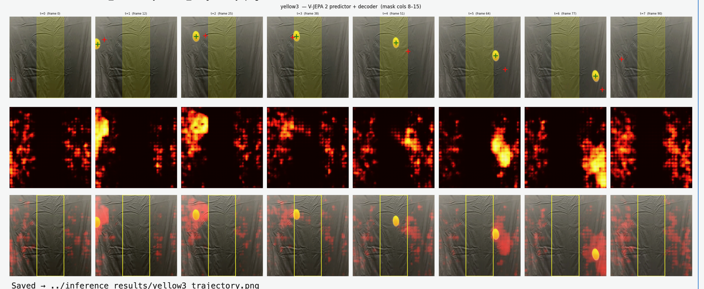

V-JEPA Object Tracking
Tracking a projectile through complete occlusion with V-JEPA 2.1 + a learned spatial decoder — generative world models for object permanence.

Overview
A computer vision project exploring whether self-supervised video models can reason about object trajectories that pass through occlusions — situations where the camera briefly loses sight of the target but physics says it must still be moving.
The system uses V-JEPA 2.1 as a frozen latent predictor and trains a small CNN decoder to extract a projectile's spatial position from the predicted latent state. When part of the scene is masked, the model has to rely on motion priors it learned during pretraining to "see through" the obstruction.
Built with Minh Vu as a CS C280 (Computer Vision) final project at UC Berkeley.
The Problem
Most modern object trackers fail catastrophically the moment their target leaves the visible frame. A robotic arm tracking a tool, a self-driving car tracking a pedestrian behind a parked van, a guided munition tracking a target through smoke — all of them go blind when the pixels go.
Humans don't have this problem. We know the ball didn't disappear when it rolled behind the couch. The question this project asks: can a modern self-supervised video foundation model learn enough physics during pretraining that we can "decode" the trajectory of a hidden object from its latent state alone?
What I Built
End-to-end V-JEPA + decoder pipeline
- Takes an 8-frame video clip with a vertical occlusion mask and predicts the projectile's position at each timestep — including frames where the ball is fully hidden.
- V-JEPA 2.1 backbone runs in
predictmode over masked input patches, producing latent representations for the occluded region. - Lightweight CNN decoder (5-layer
ConvTransposestack) maps the predicted latents into a spatial heatmap, then to(x, y)coordinates.
3D U-Net supervised baseline
- Independent 4-level 3D U-Net (~10M parameters) taking RGB + mask channel input and outputting per-frame heatmaps for the full clip.
- Trained end-to-end on real catapult sequences with AdamW + cosine LR + mixed precision.
- Acts as the strong learning-based reference point against the V-JEPA approach.
SORT-CA Kalman baseline
- Classical Constant-Acceleration tracker extending the SORT framework to handle projectile gravity.
- The "is V-JEPA actually doing physics, or could a constant-acceleration model handle this?" sanity check.
Custom physical test rig
- Spring-loaded catapult for repeatable launches with minimal spin.
- Black-cloth backdrop to suppress background texture and maximize ball contrast.
- iPhone capture at 240 Hz slow-motion for dense temporal supervision.
- Three ball colors (yellow, green, multicolor patterned) used to test position-vs-appearance generalization — if the model truly learns where the ball is, accuracy should be color-invariant.
Synthetic training pipeline
- Procedurally generated decoder training data: solid colored circles on a uniform white canvas, paired with Gaussian ground-truth heatmaps. Infinite training data with zero manual annotation.
Visualization tooling
- Per-frame attention heatmaps, ground-truth (red) vs. predicted (green) marker overlay, multi-tracker comparison strips, and final overlay onto the original video.
Results
3D U-Net vs. SORT-CA on real catapult sequences
| Metric | SORT-CA (Kalman) | 3D U-Net (ours) |
|---|---|---|
| Trajectory RMSE — median | 100 px | 14 px |
| Trajectory RMSE — mean | 219 px | 17 px |
| Re-entry error — median | 2.5 px | 4.2 px |
| Re-entry error — mean | 120 px | 15.4 px |
The U-Net achieves a 6× reduction in median trajectory RMSE and a 13× reduction in mean — a decisive win over classical motion estimators on the dominant metric.
The re-entry metric tells a more nuanced story. SORT-CA actually has a better median than the U-Net (2.5 px vs 4.2 px) on well-conditioned clips, but its mean explodes to 120 px when the pre-occlusion velocity estimate is noisy. The U-Net's strength isn't being best on every clip — it's being consistent. For any control loop that depends on bounded worst-case behavior, consistency wins.
V-JEPA pipeline
Qualitatively, the V-JEPA pipeline correctly tracks the ball through the occlusion: the decoder's peak response stays aligned with the true position across the entire masked window, and the ball re-emerges from the mask exactly where the predictor said it would. The latent foundation model has internalized projectile momentum well enough to fill in the gap — even though it was never trained on this task, this rig, or this camera.
The catch: rendered heatmaps are noisy. The decoder was trained on synthetic circles on a clean white canvas, so it has no learned prior that "fabric texture ≠ ball" — and at inference time it lights up secondary regions on the black cloth backdrop. The localization signal still dominates, but the noise floor is high.
Key Findings
- Learned spatiotemporal features beat hand-coded motion models by an order of magnitude in cumulative RMSE — but the gap is much smaller in median than in mean, because the failure modes of the kinematic model are unbounded.
- The Kalman filter isn't always wrong. On easy clips it's competitive. The argument for learning isn't average-case accuracy — it's worst-case consistency.
- Decoupled training works for localization, fails for background suppression. A decoder trained on synthetic circles generalizes positionally to real catapult video but inherits no priors about what isn't an object.
- Foundation models contain usable physics. V-JEPA's frozen predictor produces latents whose peak response tracks a parabolic trajectory through an unseen occlusion, with no task-specific training.
Limitations & Future Work
- Close the synthetic-to-real decoder domain gap. Augment synthetic training with realistic background textures, color jitter, and fabric-like patterns so the decoder learns to suppress non-object activations.
- Extend beyond ballistic motion. Current evaluation is pure parabolic flight. The harder test is collisions inside the occluded region — scenarios where the velocity vector changes discontinuously and any constant-acceleration baseline fundamentally fails.
- Hybrid kinematic + world-model architecture. Use SORT-CA's prediction as a bounded search region inside which the V-JEPA world model refines the estimate. Combines the safety guarantee of classical estimation with the non-linear modeling capacity of learned priors.